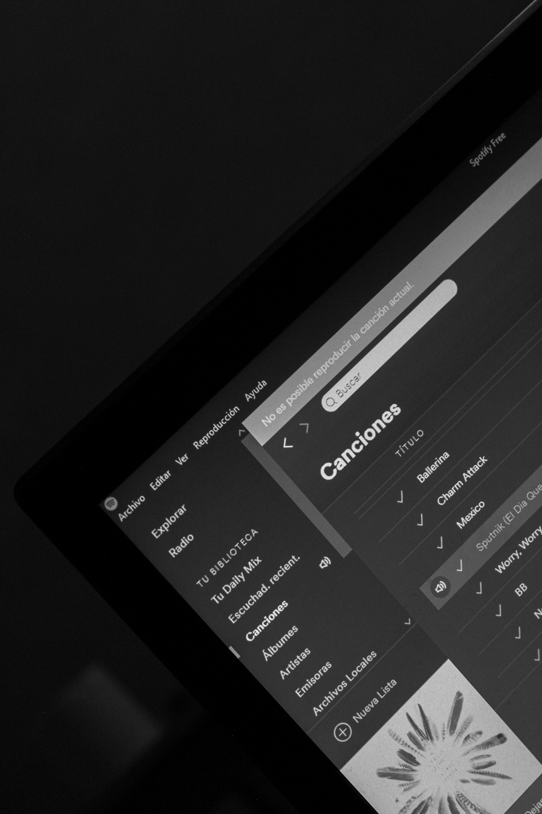
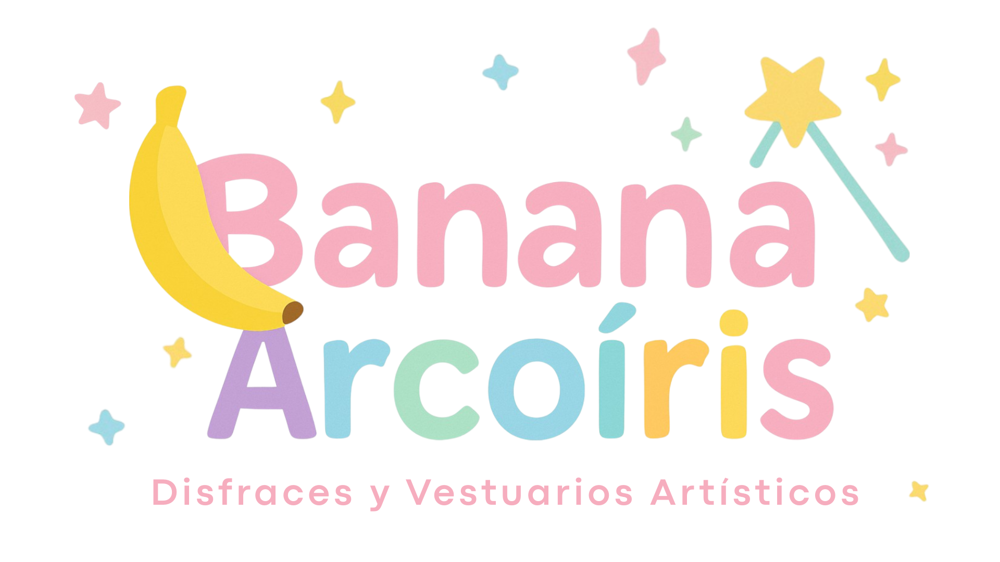

¿Quién soy?
¡Hola! Soy Victoria Balderas, estudiante de FACPYA. Aquí te comparto mis pasatiempos y gustos, de esas cosas que realmente me hacen sonreír.
Mi hobbie
Mi hobbie favorito es bailar. Es mi manera de desconectarme del mundo, expresar lo que siento y llenarme de energía. Siempre encuentro en la música una excusa perfecta para moverme y divertirme. Formo parte del taller de danza urbana de la facultad, realizamos presentaciones AFI cada semestre.

Mis canciones favoritas
Mi gusto musical es bastante diverso: disfruto canciones que me hacen bailar y otras que me hacen reflexionar, según el momento. La música es para mí una forma de expresar mi energía y mis emociones.
Mi trabajo
Desde hace más de 10 años, mi mamá emprendió un negocio de diseño y confección de vestuarios y disfraces para niños. Un proyecto que comenzó con mucha ilusión y esfuerzo. Ver cómo ha trabajado con pasión y dedicación nos inspira a toda la familia a apoyarla y crecer junto a ella. Cada detalle del negocio refleja su amor por lo que hace y su constancia, y para mí es un orgullo poder ser parte de él.
